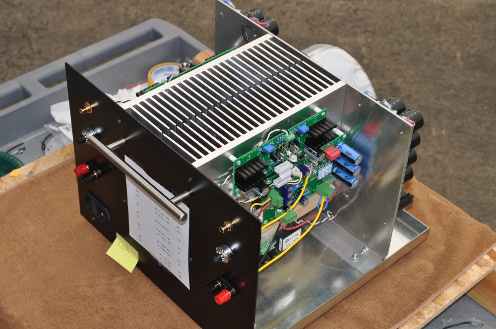
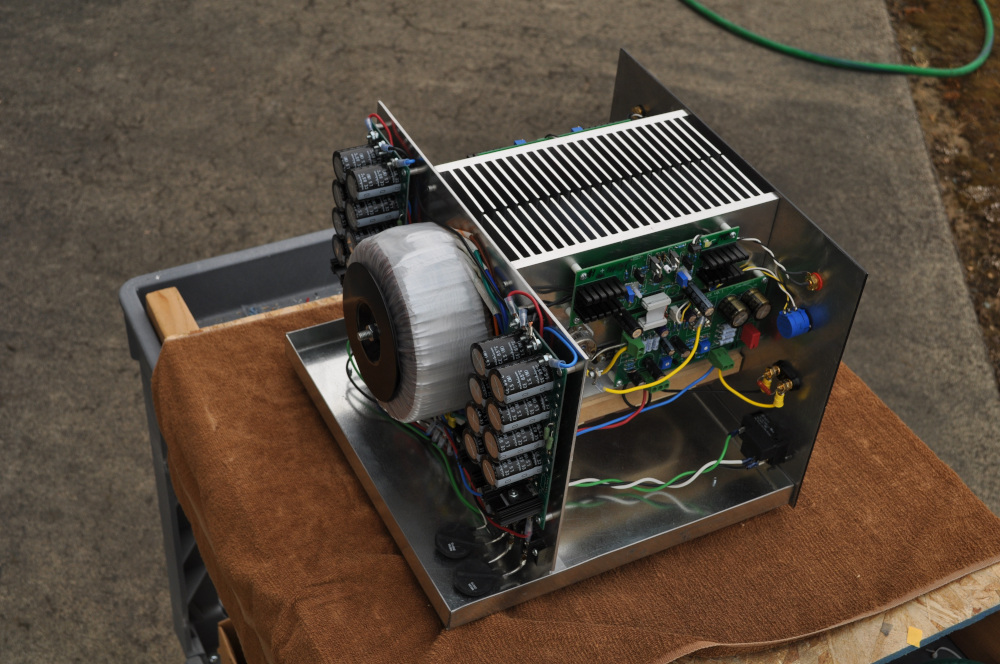
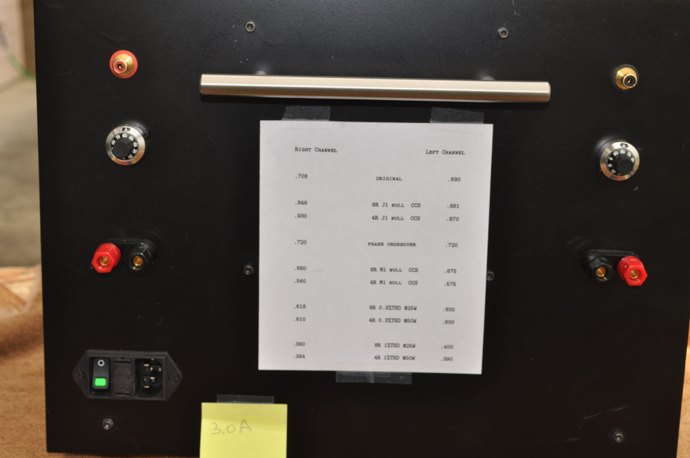
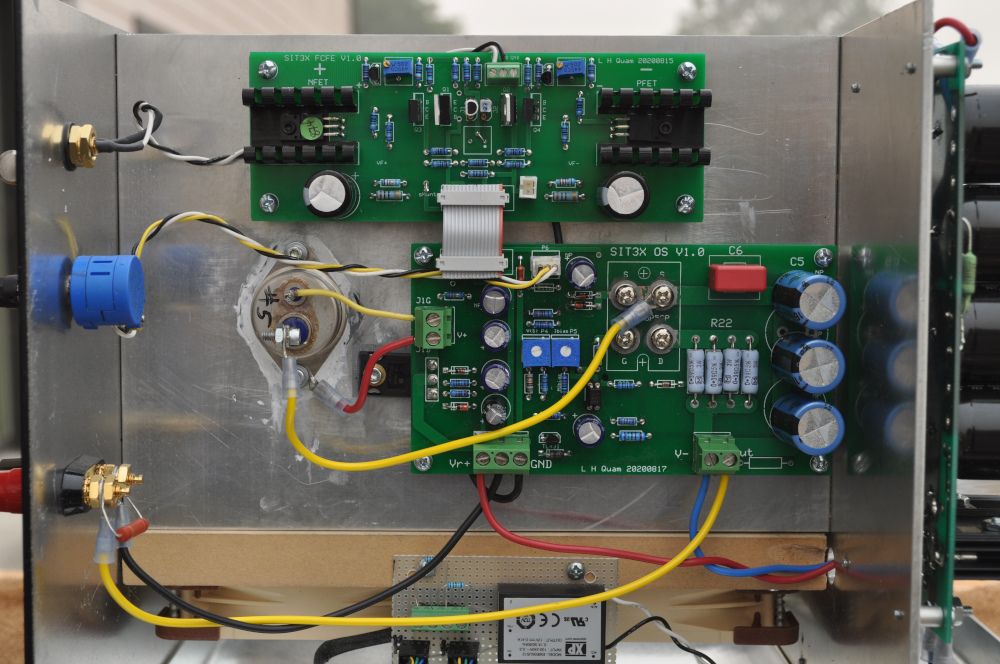
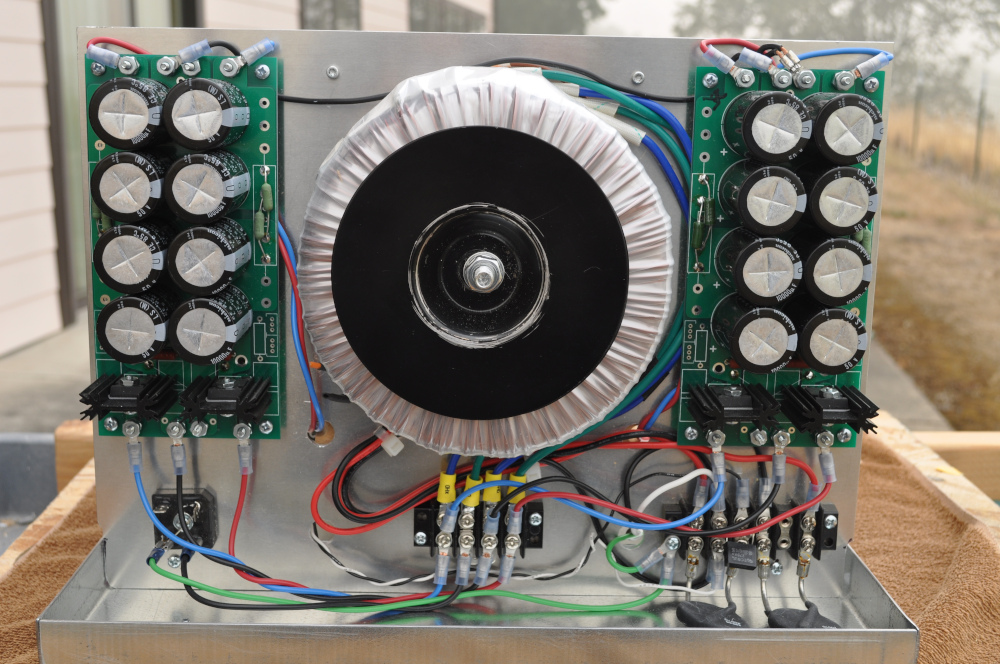
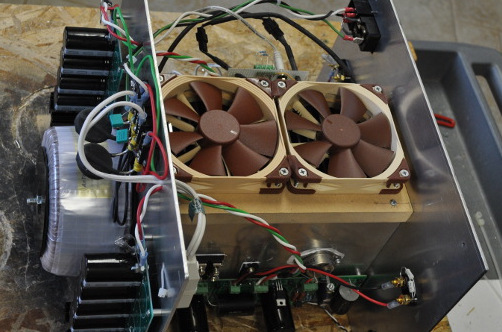
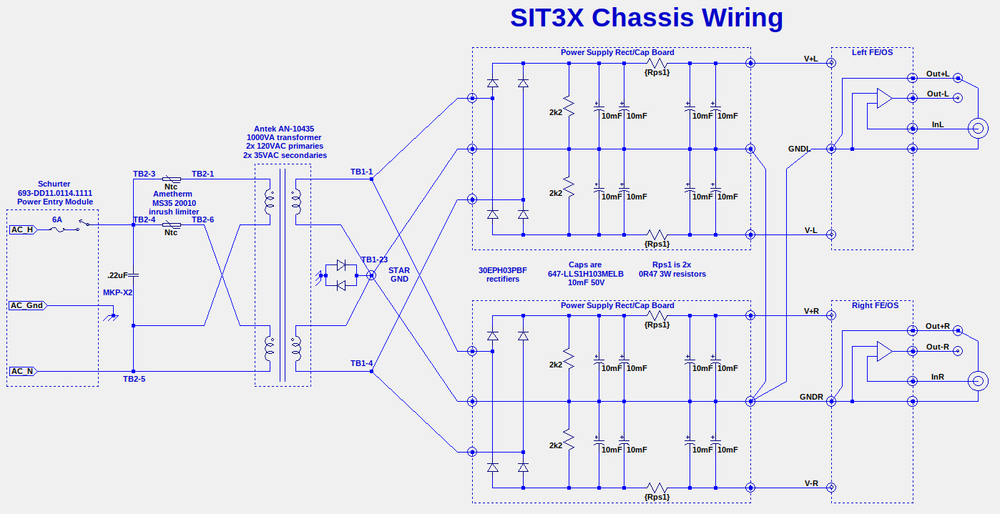

|  |  |
|  |  |
|  |  |
The SIT3X prototype was built using PCBs from a small fabrication
run of the OS and FCFE PC boards, and some left over power supply
boards from a previous amplifier project. During bench
tests I discovered an artwork error on the FCFE PCBs which was
easy to fix and several other design issues on both the FCFE and
OS PCBs that required some modifications. All of these
modifications have been incorporated into the schematics and PCBs
shown in the SIT3X Release
documentation. The release versions of the OS and FCFE PCBs
have been tested in the prototype chassis.
I used an Antek AN-10435 1000VA transformer having two 35Vrms
secondaries. I deliberately chose an oversized transformer
to allow experimentation with bother higher than necessary rail
voltages and higher bias currents. An 800VA
transformer with 34Vrms secondaries would be more than adequate,
but I would not recommend going much below 600VA and 32Vrms.
Prototype Power Supply SchematicPower Supply Schematic:
The SIT3X prototype uses the same simple chassis construction
that I have used for most of my other amplifiers. It
consists of two HeatsinkUSA heatsinks mounted fin-to-fin,
supported by a 1/8" aluminum back panel and a power supply panel,
each mounted to a galvanized bottom tray. The design could
not be simpler. It should be relatively easy to add
ventilated covers but I have not yet bothered.
This chassis design has numerous advantages:
It also has some disadvantages:
I recommend this chassis design for those looking for output
power levels above 25 Watts into 8R.
{kind=link}